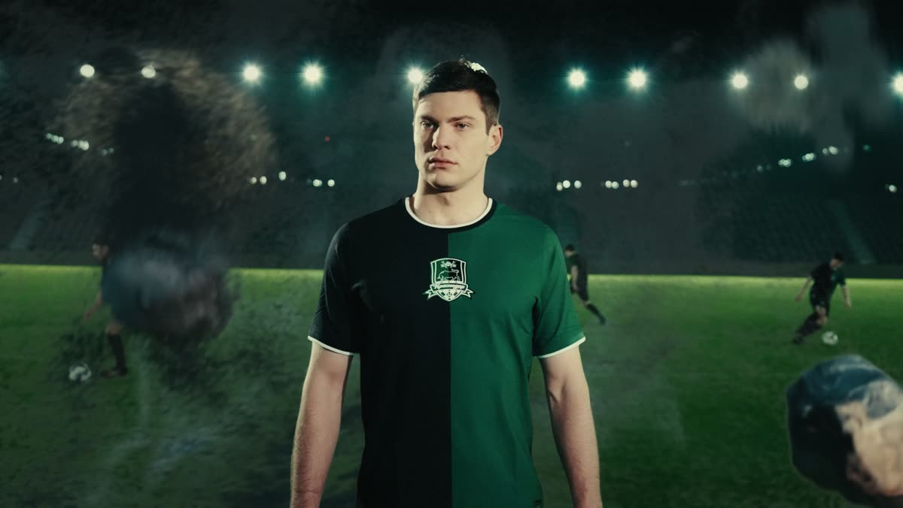
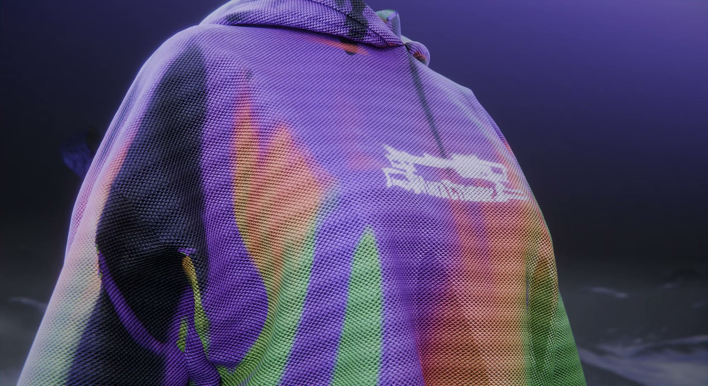

работаю по всему миру
Реклама,которуюне снятькамерой.
CGI, VFX и 3D-ролики для брендов — от идеи и превиза до финального рендера в 4K. Работаете напрямую со мной: без агентских наценок и недельных согласований.
Работы
Продуктовый CGI, VFX для соцсетей, клипы и промо. Наведите на карточку — она оживёт, кликните — откроется со звуком.


Услуги
Продуктовый CGI
Полностью трёхмерный ролик для рекламы и промо: моделирование продукта, реалистичные материалы, студийный свет, симуляции жидкости, дыма и ткани. Ваш товар выглядит идеально — без съёмочной группы, аренды студии и логистики.
- Blender
- Embergen
- Marvelous
- Houdini-style FX
VFX для соцсетей
Спецэффекты, которые останавливают палец на скролле: интеграция 3D-объектов в живое видео, разрушения, огонь, магия, трансформации. Формат reels/shorts/tiktok — вертикаль, динамика, ритм под музыку.
- After Effects
- SynthEyes
- Кейинг
- Клинап
AI-реклама
Гибридный пайплайн: генеративное видео и изображения на базе Kling, Sora и Photoshop AI, доведённые до продакшн-качества руками — апскейл, шумоподавление, цветокор и ручной композитинг. Скорость AI при контроле CG-артиста.
- Kling / Sora
- Topaz Video AI
- Photoshop AI
- Upscale 4K
Композитинг и трекинг
Камерный и объектный трекинг, ротоскоп, кейинг, чистка кадра, удаление объектов, замена фона и неба, гриды и финальный цветокор. Тот самый невидимый слой работы, из-за которого кадр выглядит дорого.
- Camera track
- Object track
- Roto
- Clean-up
Клипы и обложки для артистов
Визуал для музыкантов: CGI-клипы, лупы для выступлений, обложки релизов, тизеры треков. Собственная визуальная концепция под звучание — от мрачного кибера до глянцевой рекламы.
- Music video
- Cover art
- Visual loops
- Teasers
Полный цикл под ключ
Беру проект целиком: идея, сценарий, раскадровка, 3D, рендер, монтаж, звук и адаптации под все площадки — 9:16, 1:1, 16:9. Вы получаете готовый пакет материалов, а не исходники, с которыми надо что-то делать.
- Сценарий
- Превиз
- Рендер
- Адаптации
Процесс
Задача
Созваниваемся или переписываемся: продукт, аудитория, площадка, референсы, дедлайн. Фиксирую смету и сроки — дальше цена не меняется.
Концепт
Раскадровка и черновая анимация камеры. Вы видите будущий ролик до того, как в него вложены десятки часов рендера.
3D и FX
Моделинг, шейдинг, свет, симуляции, трекинг и интеграция. Промежуточные превью — на каждом этапе, без «пропаданий на две недели».
Пост и сдача
Композитинг, цветокор, звук, апскейл до 4K и нарезка под все форматы. Два круга правок включены в стоимость.
Ещё работы
С кем
работал
Ритейл, спорт, кино, девелопмент и digital. Одним нужен был кадр, который невозможно снять камерой, другим — узнаваемый визуал под кампанию.
И ещё бренды, агентства и артисты за кадром. Если хотите обсудить идею — пришлите продукт, референсы или просто опишите задачу. Отвечу с понятным следующим шагом.
Обсудить задачуИван
«VASTY»
Мне 24 года, и последние пять лет я делаю то, что раньше могли позволить себе только большие продакшены: рекламу, которую невозможно снять камерой. CGI-артист и VFX-специалист полного цикла.
Работаю без прослоек: вы общаетесь напрямую с тем, кто делает ролик. Это значит быстрые правки, честные сроки и решения, которые принимаются за минуты, а не за неделю согласований. Мне одинаково интересны глянцевый продуктовый рендер и грязный киберпанк для клипа — главное, чтобы кадр цеплял.
Софт
AI в пайплайне
Дополнительные скиллы
Цены
Точная смета — после брифа. Ниже ориентиры, от которых считается проект.
VFX-ролик
- Вертикальный ролик 10–20 сек — под формат reels/shorts, где решают первые секунды
- 3D встраивается прямо в ваше видео: трекинг и композитинг так, что зритель не отличит от съёмки
- Цветокор, звуковой дизайн, финал в 4K — готово к публикации сразу
- Срок — от 4 дней: успеваете к запуску, а не после него
Полный CGI
- Ролик целиком строится в 3D — продукт, сцена, свет, симуляции там, где камера бессильна
- Раскадровка и превиз до старта продакшена — видите ролик заранее, без сюрпризов на финале
- Сразу адаптирован под 9:16, 1:1 и 16:9 — один проект закрывает все площадки
- 2 круга правок включены — дорабатываем без доплат
- Срок — от 10 дней
Сопровождение бренда
- 4–8 роликов в месяц под ваш контент-план — не думаете о продакшене, просто получаете видео
- Единый визуальный стиль и своя библиотека 3D-ассетов — бренд узнаваем в каждом ролике
- Приоритетная очередь и сжатые дедлайны — вы в списке первым
- Поддержка в чате и участие в планировании — как штатный CG-продакшен, но без штата
Стоимость зависит от хронометража, сложности симуляций, количества шотов и срочности. Работаю по предоплате 50%. Возможен договор и работа с юрлицами, NDA — по запросу.
FAQ
Сколько занимает производство ролика?
Что нужно от меня для старта?
Можно ли снять живое видео и добавить эффекты?
Вы используете нейросети — это не «дёшево»?
Как проходят правки?
Работаете с зарубежными заказчиками?
Давайте
сделаем
Расскажите про продукт и задачу — предложу идею и посчитаю смету в течение 24 часов. Ответ на бриф бесплатный и ни к чему не обязывает.